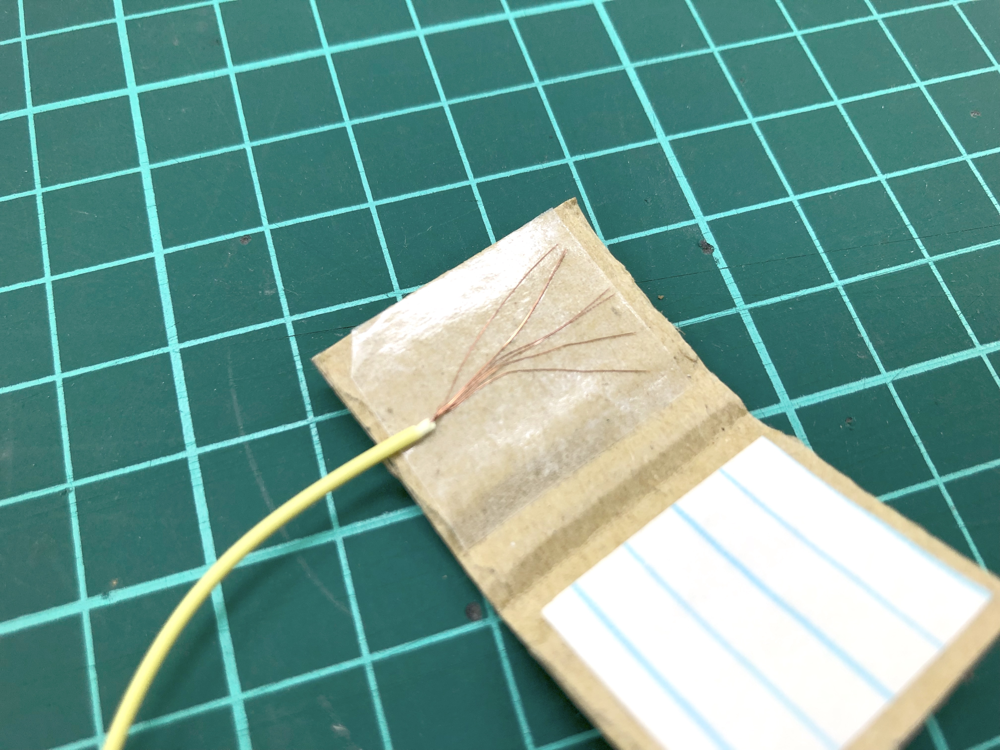

材料費20円!?簡単お手軽接触センサーで かにロボコン「激レアメタル」をねらっちゃおう！
11月、いよいよ始まる「かにロボコン」達。
富山県魚津市、第1回 紅ズワイガニロボコン は 11/28 ！
— Yuichi Ray Matta | 時を贈るおじさん (@yrm__) October 31, 2021
育った選手たちをぜひ見に来てね！https://t.co/yZvu5UA5NY pic.twitter.com/tiU12TRGmj
ロボットを仕上げているとちょっとしたセンサーが欲しくなる。そこで手軽に作れるのが「接触スイッチ」。
まずは段ボールの切れ端。
二つ折りの内側に両面テープを。
コード剥きは長めに2cmほど。

線をあえてボサボサにして両面テープにピタっ。
そしてアルミ箔。
ボサボサの線の上に被せれば出来上がり、簡単、安い、20円ぐらい？
使い方も簡単、スイッチ線のどちらかをIchigoJamの(例えば)IN4に、片方はGNDに。
こんなサンプルプログラムを書けば、
離れていると「1」、接触すると「0」。
お手軽スイッチ。https://t.co/amdAK2Oi6B pic.twitter.com/SrqdcQ2wg6
— Yuichi Ray Matta | 時を贈るおじさん (@yrm__) November 1, 2021
これで激レアメタルの台を検知できるかも！？
残りの仕上げも楽しもう！